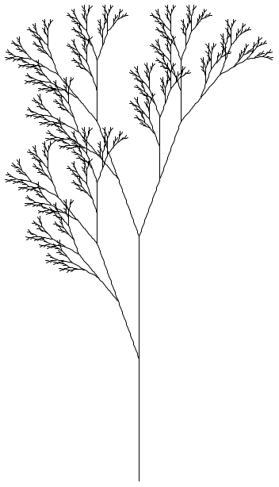

2 Interpreting L-systems
Just rewriting strings isn’t very interesting. L-Systems become useful when the resulting strings are interpreted. For example, the following L-System is interpreted as a turtle graphics program, where F, means draw, - and + mean rotate by θ degrees, and |[| and |]| mean save and restore the turtles state:
#lang lindenmayer racket ## axiom ## X ## rules ## X -> F[+X]F[-X]+X F -> FF ## variables ## n=7 θ=20 ============================================= (require lindenmayer/turtle) (provide (all-from-out lindenmayer/turtle) X) (define (X turtles variables) turtles)
And running this system produces a picture of a tree branch:

In general #lang lindenmayer can be extended by a section language on the #lang line, in this case racket. Then below the line of ===== there should be a module written in that language that tells the l-system how it should be interpreted. The program must export one function matching each terminal and non-terminal of the l-system, plus the function start and finish. In our example the lindenmayer/turtle library provides most of these functions.
The L-system is interpreted by first creating an initial state using the start function. Then the function matching each character of the string are called on the state and the variables to produce a new state. Finally the finish function is called to produce the final result.
The start function should match the contract (-> hash? any/c). It takes a hash table mapping each variable to its value. The functions for each character of the string should match the contract (-> any/c hash? any/c). They take in the current state and variable mapping and produce a new state. The finish function should match the contract (-> any/c hash? any/c). It takes in the current state and variables and produces the final product of the system.
The lindenmayer package comes with the lindenmayer/turtle and lindenmayer/3d-turtle collections for L-system interpretation